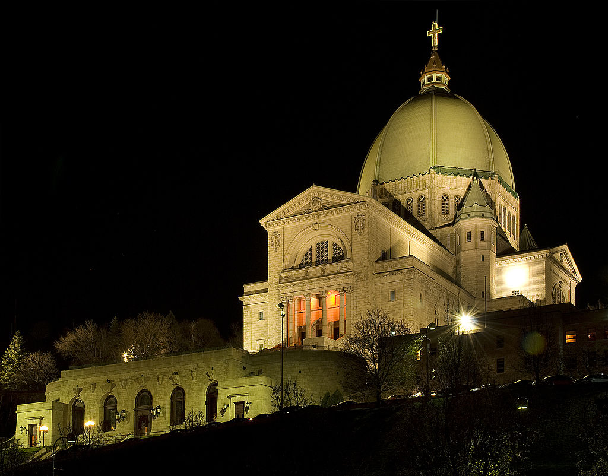

For over a century and a half, Montreal was the industrial and financial centre of Canada. The variety of buildings included factories, elevators, warehouses, mills, and refineries which today provide a legacy of historic and architectural interest, especially in the downtown area and in Old Montreal. Many historical buildings in Old Montreal retain their original form, notably the impressive 19th century headquarters of all major Canadian banks on Saint Jacques Street (formerly known as Saint James Street). From the Art Deco period, Montreal offers a handful of notable examples. Ernest Cormier's Université de Montréal main building located on the northern side of Mount Royal and the Aldred Building at Place d'Armes, an historic square in Old Montreal.
In fact, Place d'Armes, shown in panorama below, is surrounded by buildings representing several major periods in Montreal architecture: the Gothic Revival Notre-Dame Basilica; New York Life Building, Montreal's first high-rise; the Pantheon-like Bank of Montreal head office, Canada's first bank; the aforementioned Aldred Building.[1] (1931) and the International style 500 Place D'Armes.
Church architecture

Founded as a Roman Catholic French colony and nicknamed "la ville aux cent clochers" (the city of a hundred belltowers), Montreal is renowned for its churches.
The city has four Roman Catholic basilicas: Mary, Queen of the World Cathedral, Notre-Dame Basilica, St. Patrick's Basilica, and Saint Joseph's Oratory. The Oratory is the largest church in Canada, with the largest dome of its kind in the world after that of Saint Peter's Basilica in Rome. Other well-known churches include Notre-Dame-de-Bon-Secours Chapel, which is sometimes called the Sailors' Church.
Following the British victory in the Seven Years' War, many protestant immigrants came to the city from England, Scotland and Ireland. This led to various Protestant churches being built to accommodate the growing community. The two most notable of these are the Saint James United Church and the Anglican Christ Church Cathedral, which was suspended above an excavated pit during the construction of the Promenades Cathédrale mall, part of Montreal's Underground City.
Expo 67